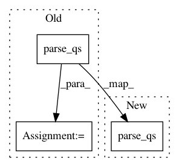

b85fd873930c51beaba187673f1548eb56e7f38a,tensorboard/plugins/audio/audio_plugin_test.py,AudioPluginTest,testNewStyleAudioRoute,#AudioPluginTest#,185
Before Change
self.assertEqual("audio/wav", entry["contentType"])
self.assertEqual("", entry["label"])
self.assertEqual(1, entry["step"])
parsed_query = urllib.parse.parse_qs(entry["query"])
self.assertListEqual(["bar"], parsed_query["run"])
self.assertListEqual(["quux/audio_summary"], parsed_query["tag"])
self.assertListEqual(["0"], parsed_query["sample"])
self.assertListEqual(["1"], parsed_query["index"])
After Change
self.assertEqual("audio/wav", entry["contentType"])
self.assertEqual("", entry["label"])
self.assertEqual(1, entry["step"])
urllib.parse.parse_qs(entry["query"]) // should parse
def testOldStyleIndividualAudioRoute(self):
Tests fetching an individual audio clip from an old-style
In pattern: SUPERPATTERN
Frequency: 3
Non-data size: 3
Instances
Project Name: tensorflow/tensorboard
Commit Name: b85fd873930c51beaba187673f1548eb56e7f38a
Time: 2020-04-16
Author: wchargin@gmail.com
File Name: tensorboard/plugins/audio/audio_plugin_test.py
Class Name: AudioPluginTest
Method Name: testNewStyleAudioRoute
Project Name: tensorflow/tensorboard
Commit Name: b85fd873930c51beaba187673f1548eb56e7f38a
Time: 2020-04-16
Author: wchargin@gmail.com
File Name: tensorboard/plugins/audio/audio_plugin_test.py
Class Name: AudioPluginTest
Method Name: testOldStyleAudioRoute
Project Name: home-assistant/home-assistant
Commit Name: 931f7e86152aef707fbd57ffdefe57ee39293151
Time: 2015-12-12
Author: paulus@paulusschoutsen.nl
File Name: homeassistant/components/http.py
Class Name: RequestHandler
Method Name: _handle_request